Chasing Fireflies
An interactive Processing game where players catch glowing fireflies using a joystick, button, and potentiometer with custom animations, progressive difficulty, and a persistent leaderboard.
Video
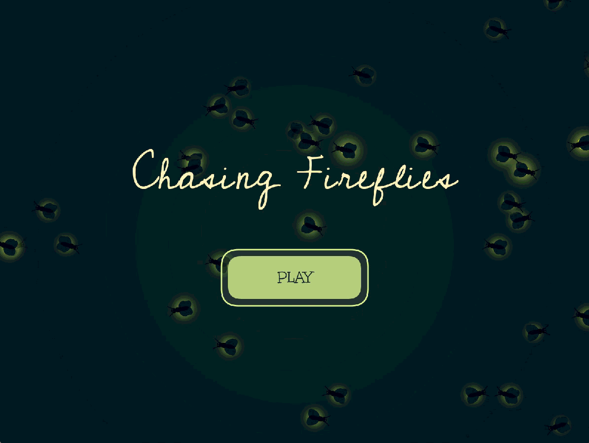
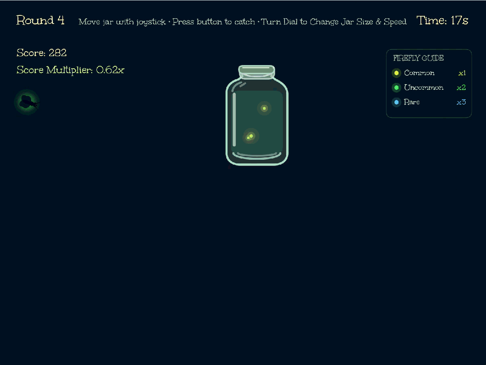
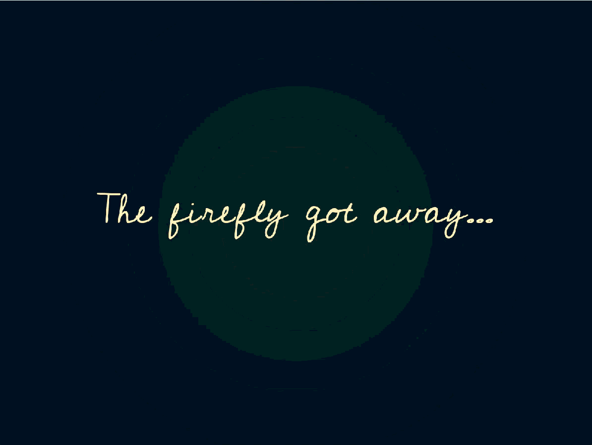
Inspiration & Design Decisions
This project was inspired by catching fireflies and a particular reference that stood out when creating the feel of the game was a lyric video for the Broadway show Maybe Happy Ending.
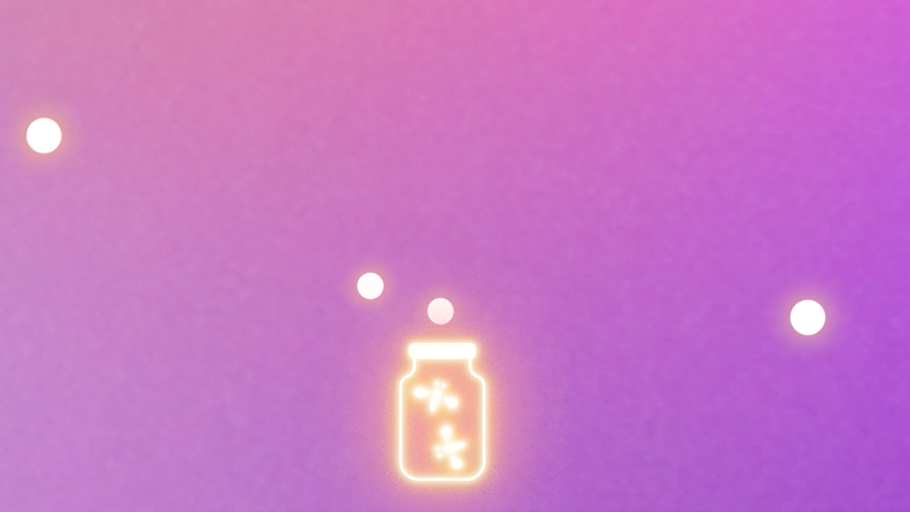
I wanted the fireflies to have simple black bodies with different color glows. The colors were inspired by the blue ghost firefly (Phausis reticulata), the Big Dipper firefly (Photinus pyralis), and Photuris versicolor.
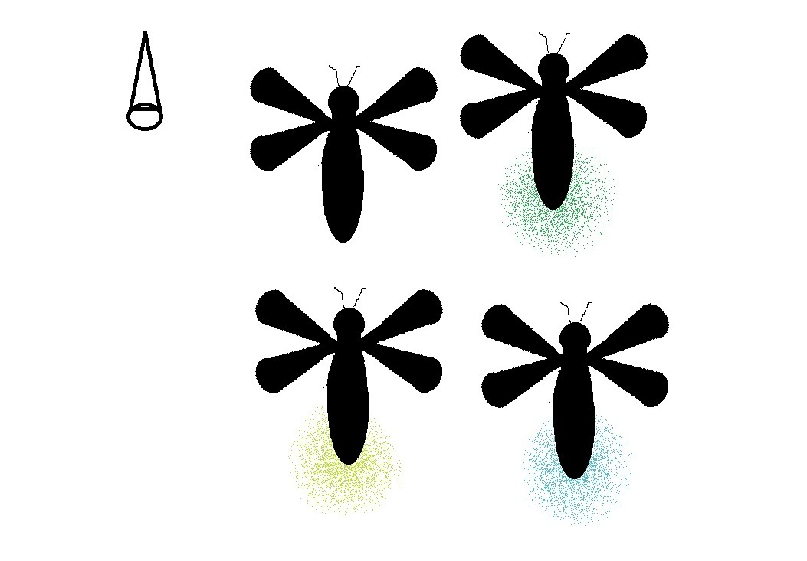
I sketched out the main screens I wanted my game to have which were Home, Gameplay, Release Animation, and Score
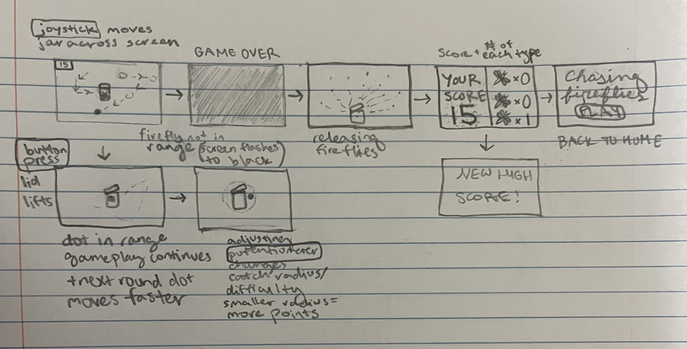
I had originally planned to create a scrapbook page where players could get factual information about the fireflies, but the gameplay mechanic I decided on which rewarded more points for rare fireflies made the game diverge from reality and adding the informational cards made less sense at that point.
I wanted the jar to look like a translucent, classic mason jar with its lid facing upward. I also experimented with how the lid would respond to the player's actions. I had originally planned to open the lid with a button press, but decided to have it swing open automatically when a firefly comes within range of the jar and close when the player presses the catch button. This made the catching interaction feel more responsive to the firefly's movement.
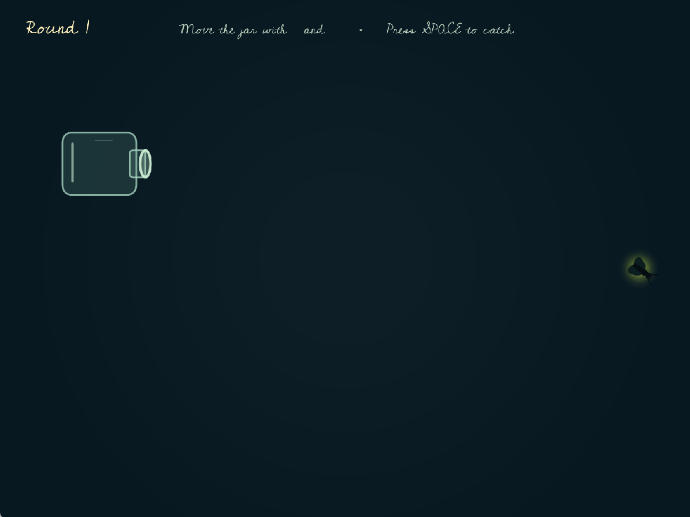
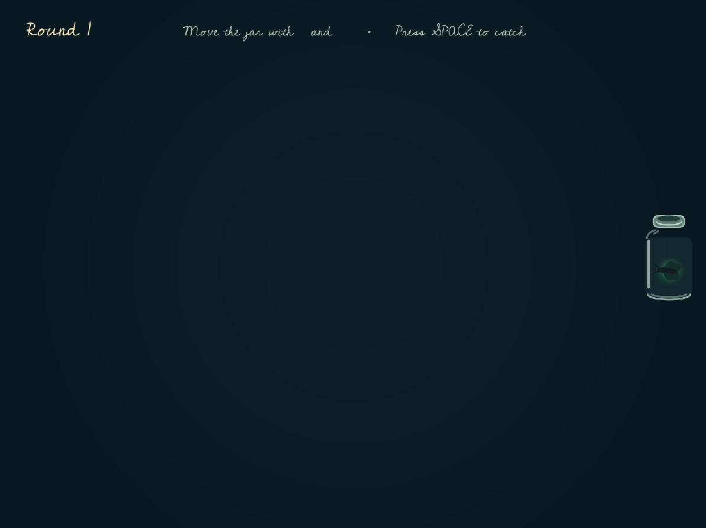
For the release animation, I wanted to maintain a visual connection between the catching and releasing mechanics. Instead of having the caught fireflies disappear and reappear, I introduced small glowing dots that move around inside the jar. During the release animation, these glows turn back into fireflies one at a time and fly away.
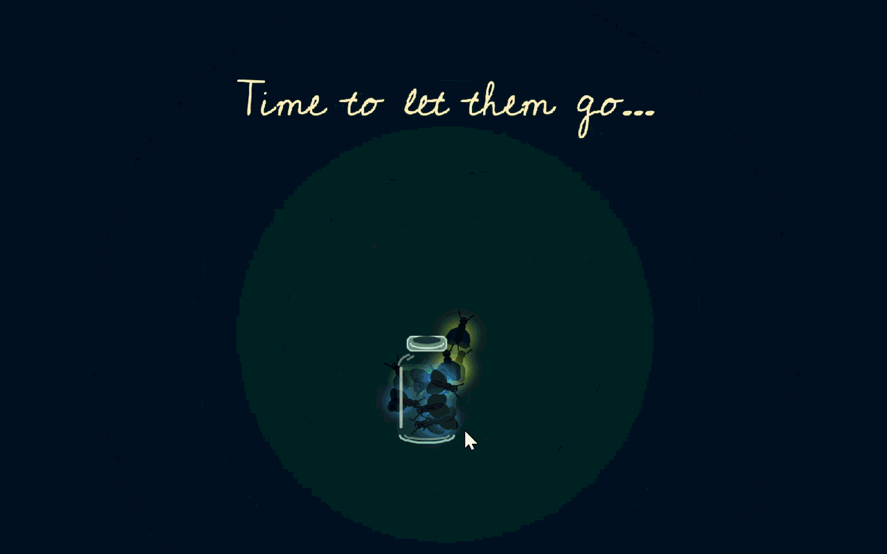
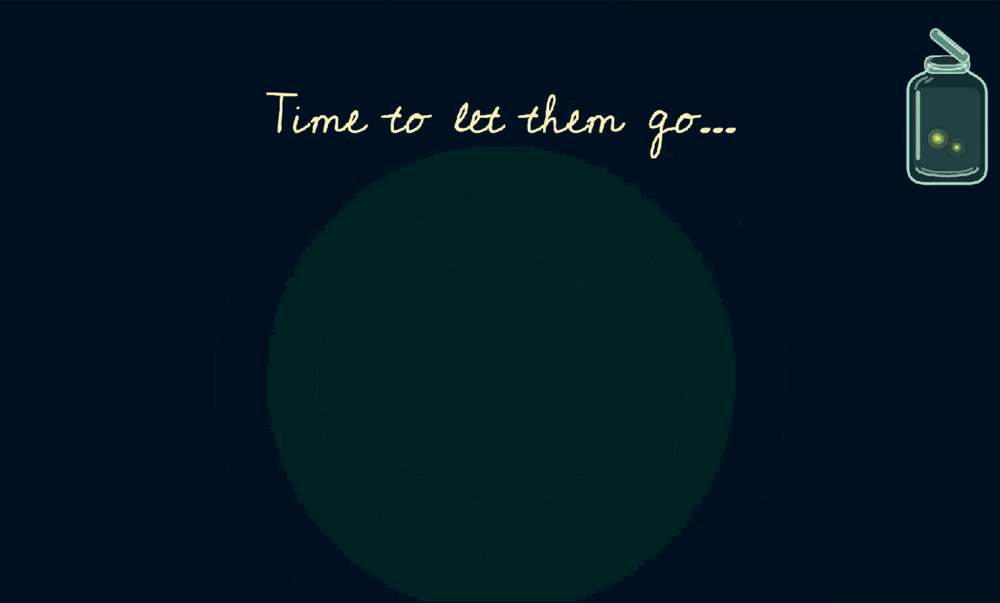
I also wanted the menus to work entirely with the physical controller. I added a visual highlight to the selected option so players could toggle between them using the joystick and select one with the button press.
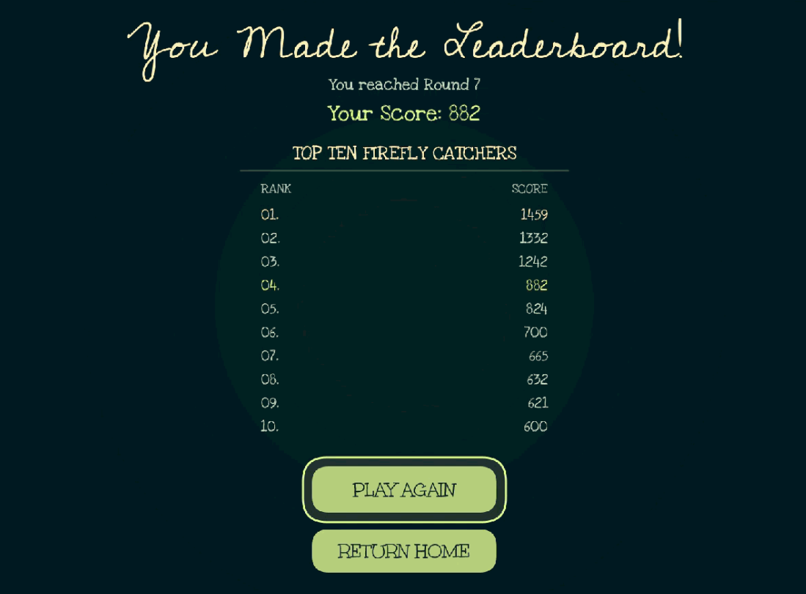
Technical Implementation
I created a keyboard version of the game in Processing with the ChatGPT Free Tier (GPT-5.6 Luna) and then added the physical input controls to the Processing script manually.
Example Prompts
I used ChatGPT iteratively throughout development, providing specific instructions and screenshots to refine the appearance and behavior of individual elements. Some examples include:
Visual design:
i want the fireflies to be blue, yellow-green, and a brighter green, make them feel like glowing dots, a cursive font for the title, remove the tagline
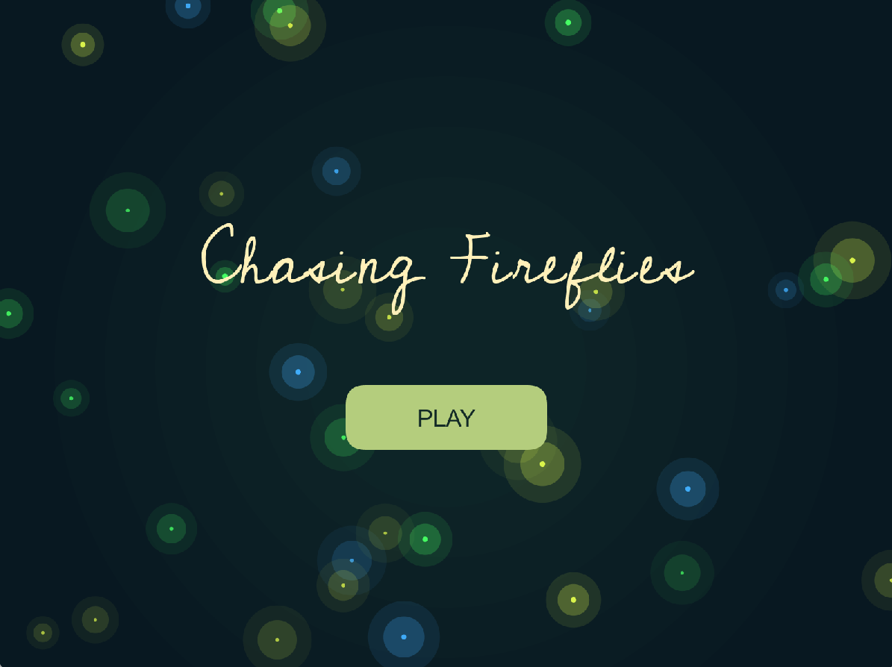
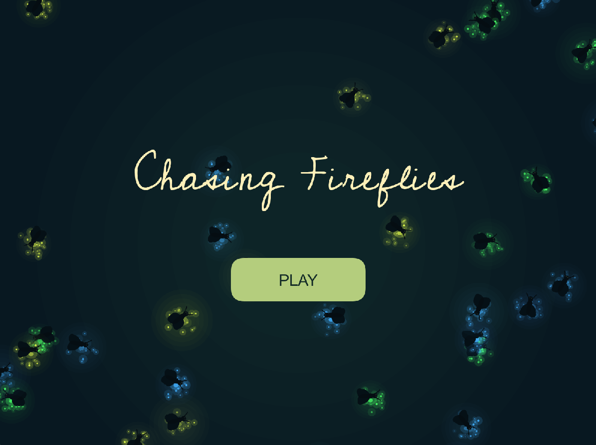
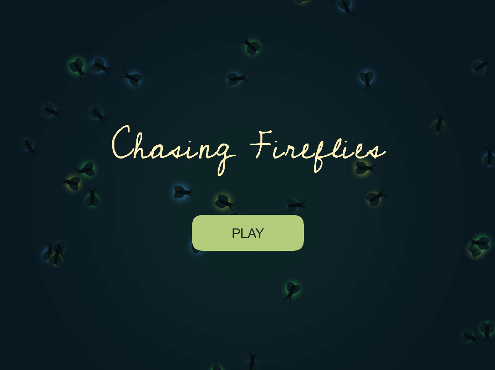
Initial gameplay mechanics:
now i'd like to work on the gameplay screen to start i want a randomly flying firefly and a jar that can be controlled by a joystick, right now it can be controlled by up and down arrows, when I click on space bar, that is a catch, if the jar and firefly are aligned a new round starts, if they are not aligned go to a game over screen
Refining the catching mechanics:
how do i update the logic so points are only scored/ firefly is only caught if the firefly is inside the shape of the jar
Release animation:
i want the release animation to start with the jar glows and one at a time the glows turn back into the fireflies as they fly away just so the visual language stays consistent
Reading Physical Inputs
I modified the joystick example code we were provided with so that all of the physical inputs were included and could be printed on a single line. This allowed me to monitor the joystick's X and Y positions, joystick button, potentiometer, and catch button together while testing the hardware.
Updating Jar Movement
Initially, the code mapped the potentiometer's analog reading (0–4095) to a joystickSmoothness value, which was used in lerp() to control how quickly the jar approached the joystick's target position. I changed this to map the reading to moveSpeed (4–24 pixels per frame), making the joystick control directional movement instead of target positioning.
Later, I introduced a jarScale variable, mapping the potentiometer reading to a scale of 1.0–2.0. This value was applied to the jar's dimensions and incorporated into the scoring calculation (pointsForSmallJar / jarScale), rewarding players for using a smaller jar.
Fixing Unintended Catch Attempts Between Rounds
Originally, the code was simply:
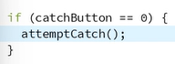
The issue was that after a firefly was caught, a new round would start, but the momentary switch would still equal 0 (registered as pressed). Even though the user did not press the button again during the new round, the game would register another catch attempt. If the new firefly was outside the jar's catch range, this could cause the game to end unexpectedly.
To fix this, I added the catchTime variable to track when the last catch attempt occurred. Before allowing another catch attempt, the game checks how much time has passed since the previous one. This prevents the button from triggering another catch immediately when a new round starts and gives the player time to release and press the button again.
Working Implementation:
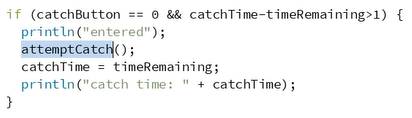
Fixing Leaderboard Logic
Originally, the game could display "New High Score!" simply because the score qualified for the leaderboard, even if it wasn't higher than the previous record. I changed the logic to distinguish between three possible outcomes:
- New High Score: Displayed only when the player's score exceeds the previous highest score.
- You Made the Leaderboard!: Displayed when the score qualifies for the leaderboard but does not beat the previous record.
- Final Score: Displayed when the score does not qualify for either achievement.
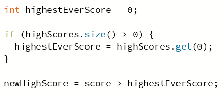
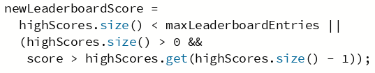
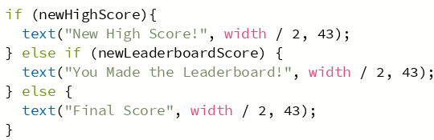
The game also tracks the new entry's rank separately so it can highlight the correct score on the leaderboard. This makes the end-screen message accurately reflect what the player actually achieved.